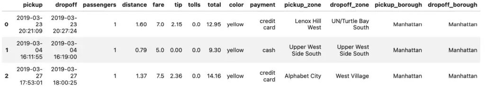
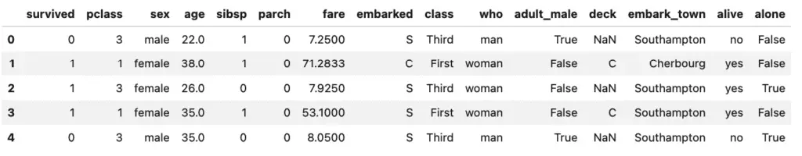
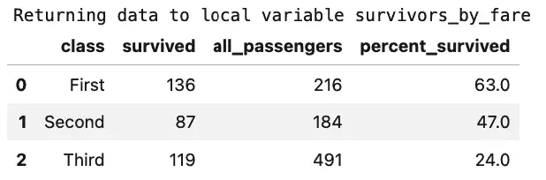
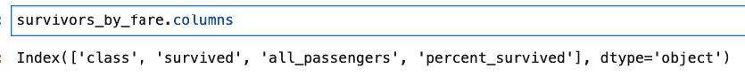
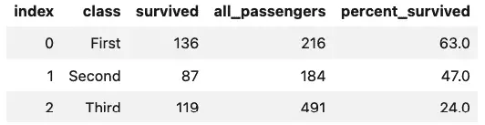

Using SQL With Pandas: PandasSQL and IPython-SQL
As popular as Pandas is to those doing Data Analysis in Python, there’s no question that SQL is an even more important tool. Invented in 1970, the SQL language and database products based on this standard serve as the backbone of most businesses.
To give you an idea of how much more popular SQL is, as of today the job board, Indeed.com, lists over fourteen jobs in SQL for every one job in Pandas. Also, despite the growing popularity of alternatives, so-called NoSQL databases still only account for about one-sixth of the mindshare of SQL.
However, using SQL for data analysis doesn’t mean you have to give up using Pandas DataFrames. Quite, the contrary – Pandas and SQL work quite well together. Let’s next consider two ways that we can use Pandas and SQL together:
We can read and write data from Pandas to SQL, using a SQL database as a simple data store.
We can use the SQL language to query data stored in a Pandas DataFrame.
SQL Databases as a “Storage Medium”
Although SQL is a language – Structured Query Language – and not a storage format, Pandas users can treat it as though it were a storage format with no additional tools. That is to say, Pandas can directly read or write data using any SQLAlchemy-compatible data sources using DataFrame.read_sql and DataFrame.to_sql.
Again can think of these APIs as a way to treat “SQL” as a storage medium. Once you have a database connection, you can read and write data in much the same way as you can use Pandas to read and write to CSV or Excel. With read_sql and to_sql, the format of the “storage medium” will be different, depending on what the database connection points to. It’s even possible for the same vendor to support different storage formats, for example, MyISAM vs. InnoDB in MySQL.
SQL As a Query Language
In addition to treating SQL as a kind of flexible storage medium, there are at least two libraries you can use that enable you to begin to take advantage of SQL as a language for querying DataFrames.
PandasSQL - PandasSQL is a simple tool with few dependencies, that allows you to query Pandas DataFrames using the dialect of SQL that SQLite uses. However, PandasSQL has not been revised in several years and provides limited functionality.
IPython-SQL and DuckDB. Using IPython-SQL and DuckDb together lets you move fairly seamlessly between Pandas DataFrames and SQL. You can query Pandas DataFrames using SQL and convert the result sets to a Pandas DataFrame (either automatically or via a separate step). The results can then be persisted back to the database if desired.
For the remainder of this article, we want to take a closer look at these two options.
Pandas With SQL Option 1: PandasSQL
Let’s first look at our simpler option, using PandasSQL to query Pandas DataFrames.
Our setup for this is fairly straightforward in Conda:
conda create -n pandasql python=3.11 jupyterlab seaborn pandasql
conda activate pandasql
We can now run JupyterLab, and, in a new Jupyter Notebook, get started with only two imports.
import seaborn as sns
import pandasql
Because the pandasql function sqldf takes a call to either locals() or globals() that is inconvenient to supply each time, the documentation recommends creating a lambda function to essentially create an alias it, for example:
sqldf = lambda q: pandasql.sqldf(q, globals())
We’re now ready to begin querying Pandas DataFrame objects using SQL. Let’s begin by loading one of the Seaborn datasets into a DataFrame:
taxis = sns.load_dataset('taxis')
taxis.head(3)
Output:

Now that we have the dataset loaded, querying it is quite simple. We just call the lambda function we created earlier with the query we want to run. For example, let’s take a look at what our driver did earn his top five all time tips:
sqldf("SELECT pickup, dropoff, distance, fare, tip from taxis order by tip desc limit 5")
Output:

Well, that’s certainly an unexpected result. Either we’re dealing with missing data, or two of the top tips our driver earned was for letting the meter run, sometimes only for a few seconds. The data is a bit of a mystery, but the query we ran to get it was extremely straightforward.
We didn’t save the result of the last query, but if you do, you’ll see it is returned as a DataFrame
top_tips = sqldf("SELECT pickup, dropoff, distance, fare, tip from taxis order by tip desc limit 5")
print(type(top_tips))
# Outputs: <class 'pandas.core.frame.DataFrame'>
Pandas With SQL Option 2: Using IPython-SQL and DuckDB
Although IPython-SQL can be used to query any SQLAlchemy-compatible data source, if we’re using Pandas, we’re probably more interested in databases that are geared toward analytic work. To put that in the form of a buzzword, we’re interested in an OLAP database (one that specializes in Online Analytic Processing, as opposed to OLTP, Online Transaction Processing).
One popular database tool for this kind of work is DuckDB, an in-process OLAP Database Management System. In-process means it’s serverless, so we can install a Python package (for example), and work with it either in memory, or persisted to a database file.
The really big advantage that DuckDB has, however, is the ability to query Pandas DataFrames directly as though they were native DuckDB tables.
For this tutorial, we’ll again use Seaborn because it comes with several datasets we can use immediately as DataFrames.
Using DuckDB and Pandas: Conda or Pip
If you’re using Conda, you can install what you need as shown below. One thing to note about Conda and ipython-sql, however, is that we’ve noticed that the conda-forge ipython-sql version is behind that of the PyPi version.
conda create -c conda-forge -n duckdb python=3.11 python-duckdb jupyterlab ipython-sql SQLAlchemy duckdb-engine seaborn
conda activate duckdb
Using pip, you can create a virtual environment and activate it (learn more), then install the following requirements.txt file using pip install -r requirements.txt:
jupyterlab
pandasql
duckdb-engine
duckdb
ipython-sql
sqlalchemy
seaborn
With the environment set up, we can now run Jupyter Lab.
To get started in a new notebook, let’s import what we need and load the ipython_sql magic (which we’ll use as %sql):
import duckdb
import pandas as pd
import seaborn as sns
# Import ipython-sql Jupyter extension to create SQL cells
%load_ext sql
Note that although we installed duckdb-engine (the SQLAlchemy driver for DuckDb), we didn’t need to import it directly. The %sql cell magic will load the correct driver based on the connection string.
Before setting up the connection itself, we can optionally set some configuration options on the ipython-sql magic function. A full set of the available options can be found in the ipython-sql documentation. Here we say we want to always get results as Pandas DataFrames, and suppress reporting on how many rows were affected when we run a query:
%config SqlMagic.autopandas = True
%config SqlMagic.feedback = False
%config SqlMagic.displaycon = False # Omit this line if you used conda; again, Conda's ipython-sql lags behind.
Next, we need to create a database connection. Here we have a choice. We can use DuckDB as an in-memory SQL engine, without persisting anything to disk:
%sql duckdb:///:memory:
Alternatively, we can persist results to disk using this syntax:
%sql duckdb:///./somefile.db
In the above connection string, everything after the /// is a file path, so we’re using somefile.db in the current directory. The extension .db is completely optional and for documentation purposes, by the way.
Querying a Pandas DataFrame Using SQL with IPython-SQL and DuckDB
That’s all the setup we needed to do. From this point on we can use SQL to query Pandas DataFrames. Let’s first load some data into a DataFrame as we normally might. We’ll use the “titanic” dataset that comes with Seaborn, and verify that this returns a DataFrame:
sns.get_dataset_names()
titanic = sns.load_dataset('titanic')
titanic.head()
Output:

Well, that’s interesting, we have some data that tells us who survived, along with their age, sex, and the type of passage they booked (“class”).
We all would like to think that when disaster strikes, everyone gets treated fairly, class distinctions magically disappear, and a sort of camaraderie of catastrophe makes us all equal. Let’s see what the data says. Using SQL, we can easily query the class, how many passengers were traveling, and how many survived, and then calculate a percentage based on that.
Here’s how it looks:
%sql survivors_by_fare << SELECT class, \
sum(survived) as 'survived', count(*) as 'all_passengers', \
round(cast(sum(survived) as float) / cast(count(*) as float), 2) * 100 as 'percent_survived' \
from titanic \
group by class \
order by class
survivors_by_fare
Output:

Oh, dear. That wasn’t very egalitarian at all, was it?
This result may not be all that surprising, really, but let’s point out two things about the code. First, we used a redirect operator, <<, rather than the usual assignment operator, =, to capture the results to a variable. Second, we were able to format the query somewhat by adding a backslash at the end of each continued line. That’s optional, of course, but it does help with the readability of the query.
Since we had earlier used the setting "SqlMagic.autopandas = True”, the type of our query result, survivors_by_fare is a Pandas DataFrame, so we can call the usual methods on it, for example, to list the columns:

Incidentally, even if you don’t have autopandas set, you can still get a DataFrame from the ResultSet object that would be returned by calling the DataFrame() method on it. The following code sequence demonstrates this.
%config SqlMagic.autopandas = False
%sql survivors_by_fare_rs << SELECT class, \
sum(survived) as 'survived', count(*) as 'all_passengers', \
round(cast(sum(survived) as float) / cast(count(*) as float), 2) * 100 as 'percent_survived' \
from titanic \
group by class \
order by class
print(f"Query returned type: {type(survivors_by_fare_rs)}")
df_survivors = survivors_by_fare_rs.DataFrame()
print(f"After conversion, we have type: {type(df_survivors)}")
Output:
Returning data to local variable survivors_by_fare_rs
Query returned type: <class 'sql.run.ResultSet'>
After conversion, we have type: <class 'pandas.core.frame.DataFrame'>
Persisting DataFrames back to DuckDB.
If you’re connected to a file database, given a DataFrame – whether created by a SQL query or not – you can also persist it back to a DuckDB table using the %sql magic. For example, given the df_survivors DataFrame created in the last section, the following code persists the DataFrame to a database table, clears the DataFrame from memory, and reads it back:
# Persist the DataFrame
%sql --persist df_survivors
# Clear the DataFrame so there's no confusion
df_survivors = None
# Query the database table by the same name
%sql select * from df_survivors
Output:

One thing to keep in mind when using %sql --persist like this is that it’s the equivalent of a create table plus the necessary insert statements. This means it’s non-reentrant, so if you need to run it again, you first need to drop the table first, as in this sequence:
%sql DROP table df_survivors
%sql --persist df_survivors
Closing Database Connections
As with any database, it’s important to close the Database connection when you are through with it. With an in-process database like DuckDB, you need to close the database so that other processes can use the file.
Earlier we opened the connection with the following command:
%sql duckdb:///./somefile.db
To close the connection, we use the same string and use %sql close, as shown here:
%sql --close duckdb:///./somefile.db
There seems to be a bug in the earlier (conda) version, of IPython-SQL, so if you’re using that version, you may find that you need to shut down the Python kernel before you can read the database from a different process on your machine.